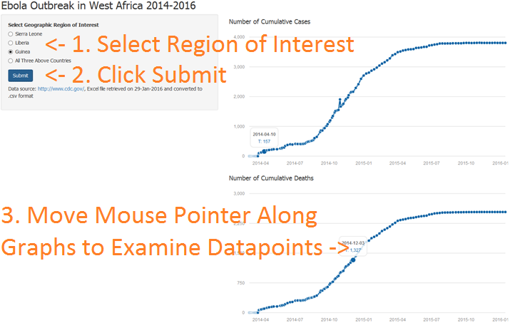

The current (as of January 2016) outbreak of the Ebola virus in West Africa is the biggest in history, resulting in significant loss of life.
For more information, see:
Ernest Yeung
Developing Data Products
The current (as of January 2016) outbreak of the Ebola virus in West Africa is the biggest in history, resulting in significant loss of life.
For more information, see:
The data was downloaded from the CDC website, then subsequently converted to CSV format.
The source code for the application can be found here: https://github.com/ernestyeung/DevelopingDataProducts.git
library(data.table)
ebola_data <- fread("graph1-cumulative-reported-cases-all.csv")
tail(ebola_data,n=1)
## WHO report date Total Cases, Guinea Total Deaths, Guinea
## 1: 2016-01-13 3804 2536
## Total Cases, Liberia Total Deaths, Liberia Total Cases, Sierra Leone
## 1: 10675 4809 14122
## Total Deaths, Sierra Leone
## 1: 3955
The application can be found here: https://eyeung.shinyapps.io/EbolaData/
